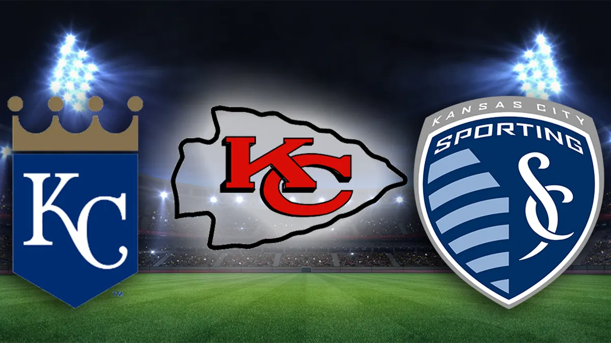

Welcome to my Kansas City Sports website!
Hi and thank you for visiting this page. This project that I worked on was first created a long while back when I just started programming. Since then I have learned a lot more and figured out new cool tricks that can help enhance websites like these. Using the odin project I have added many new features and enhancements to all of these pages. Sports has always been a part of my life. I've been a passionate player playing soccer and a fan of all these KC teams that I love so much. Creating this website was a lot of fun and has showed me how much I can accomplish with my knowledge in html, css, and javascript programming. Hopefully you enjoy this page and learn a thing or two that you didn't know. Thanks